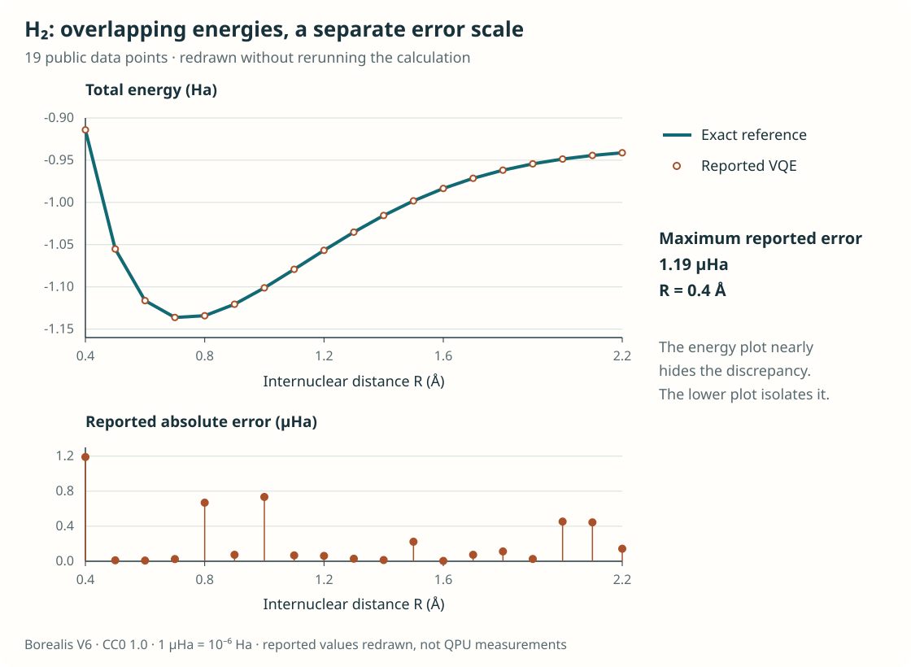
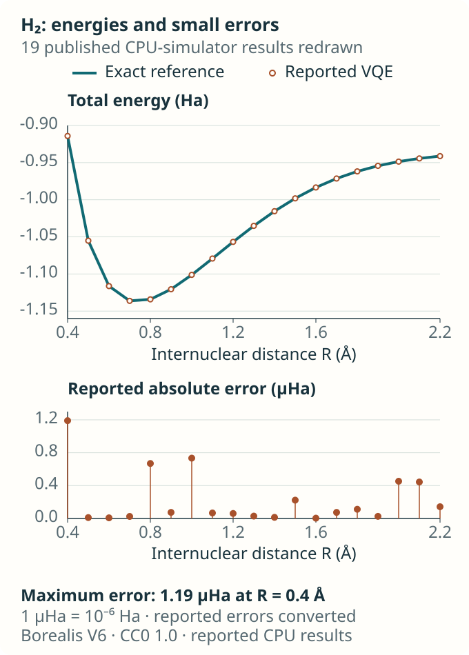
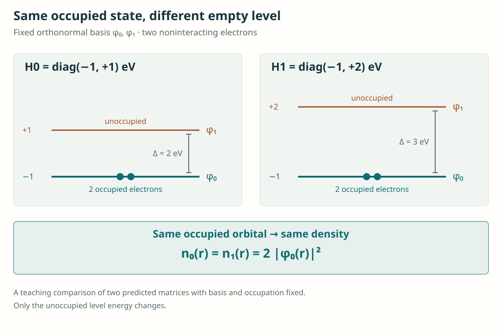
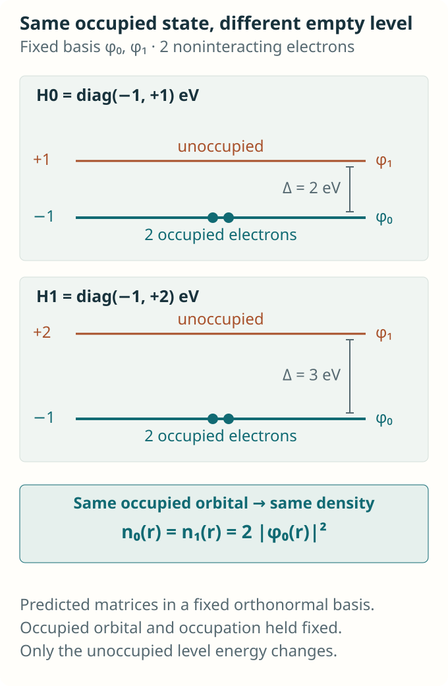
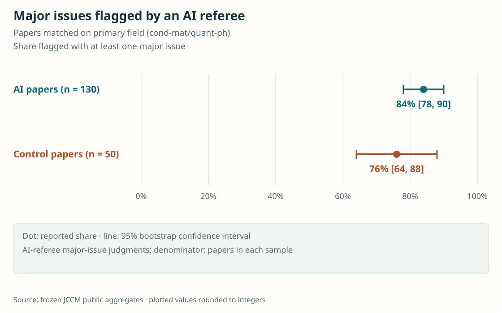
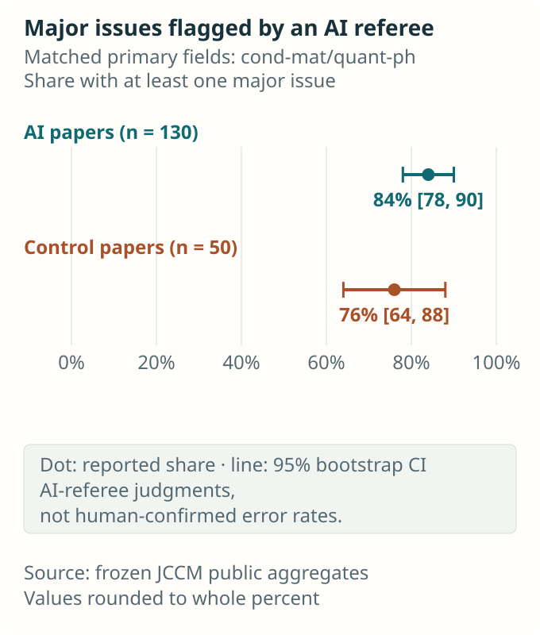

AI Automation and Scientific Judgment in Quantum and Materials Research
AI systems are beginning to turn research questions into calculations and figures, and to predict the electronic structure of materials more quickly. Turning those outputs into knowledge requires designing questions, conditions, learning objectives and verification methods together. Results in quantum and materials research, alongside independent reference calculations and methods for checking a sample of results, show how automation changes the work of scientific judgment.

Contents
- Agents that turn questions into calculations
- What repeated runs reveal
- What should a materials prediction get right?
- Preserving conditions that are already correct
- Reconstructing a calculation from a paper
- What did the AI referees count across 228 papers?
- Expert judgment also needs comparison and validation
- How researchers can design verification
- The expertise passed on to the next researcher
- References
How does a hydrogen molecule’s energy change as its two atoms are gradually pulled apart? Calculating the electronic states at different separations produces a curve that shows where the atoms form a stable bond. It is a familiar problem for students of computational chemistry, yet completing it in unfamiliar software takes considerable preparation. One must choose a model of the molecule, select a method for calculating its electronic states, repeat the calculation at each separation and check the results.
El Agente Cuántico, developed by Ignacio Gustin and colleagues, is an AI system that takes requests of this kind, finds software documentation, writes code, and produces calculations and figures. The researchers demonstrated tasks ranging from a hydrogen molecule’s energy curve to the dynamics of quantum systems interacting with an environment, many-body states and error-correction simulations. Specialist agents work with individual computational tools, while a central agent coordinates their activities. [1]
This work suggests a way to reduce the burden of learning the syntax of every program a researcher needs. It also raises a further question: once we can perform more calculations, what new conclusions can we reach? In quantum and materials research, AI is advancing along two routes at once. It can carry out computational procedures, or it can approximate the calculations themselves with a learned model. These routes draw on expertise in different places. The first must preserve scientific intent during execution; the second requires a decision about what the AI should be trained to get right.
Agents that turn questions into calculations
Quantum simulation is a way of calculating the states, energies and time evolution of quantum systems such as molecules and materials. As the number of electrons or spins increases, the space needed to describe their states grows rapidly, requiring choices between exact calculations and approximations. Even when practical methods exist, differences in how programs represent and handle a problem make expertise necessary to connect the calculations.
El Agente Cuántico automates this use of scientific software. It consults documentation and examples for tools such as CUDA-Q, QuTiP and TeNPy as needed, then assembles a calculation. The language model writes code, numerical tools execute it on a classical computer, and agents examine the output. The researchers identified a connection to physical quantum hardware as a later stage of development. [1]
For the hydrogen molecule, the system used a variational quantum eigensolver (VQE), which adjusts the parameters of a trial state to lower its energy. The publicly released generated code and results table specify a small STO-3G basis model, a classical CPU simulator and 19 interatomic separations from 0.4 to 2.2 Å. A basis is the choice of a finite set of functions used to represent the electrons’ spatial states. At each separation, the VQE energy was compared with a reference obtained by directly diagonalizing the matrix for the same STO-3G model. This comparison shows how closely VQE approaches the ground-state energy of the chosen molecular model. [1, 2]
Figure 1 replots the 19 points in the authors’ released results table. In the upper panel, the two calculated energies nearly coincide at every separation; the lower panel gives the small errors reported in the table their own axis. Ha denotes the hartree, an atomic-scale unit of energy; mHa and μHa are one thousandth and one millionth of a hartree, respectively. The largest difference listed in the table is 0.001190 mHa, or 1.19 μHa. With the computational conditions and reference values available, we can inspect a specific discrepancy beyond the impression that a curve looks smooth. [2]


What repeated runs reveal
Starting with a task whose answers can readily be compared, such as a molecular energy curve, helps make both the scope and the limits of automation visible. In a separate benchmark, the researchers ran each of five tasks—VQE, Bell states, Ising dynamics, Lindblad dynamics and hierarchical equations of motion—ten times with identical requests. Each run began without memory of previous runs, and one expert per task graded all ten using the same rubric. The 100-point rubric awarded partial credit for implementation, results and validation, and figures and interpretation. Mean scores for the tasks ranged from 97 to 100. [1]
The Lindblad task concerns the evolution of a quantum system under the influence of its surroundings. Quantum oscillations that would persist in an isolated system may decay through environmental interactions, or the system may approach a different steady state. Calculating this behaviour requires specifying both a model of the system and an approximation for the environment’s effects. The researchers asked for a comparison of isolated and damped single-qubit evolution, including the z observable as a function of time. This quantity gives the difference in populations of the two basis states.
In one reported run, the system calculated the y component instead of the requested z component. In two other runs of the Ising task, the initial states were random but did not follow the requested Haar distribution. This distribution provides a way to sample possible pure states without favouring a particular direction; the procedure for generating states must follow it. Both examples show why the observable and initial states in an executed calculation need to be checked against the original request. [1]
Assessing these cases requires looking beyond the appearance of the plots. An expert must check which component was calculated, how initial states were sampled and whether the environmental approximation suits the research question. Recurring checks can be encoded in software or assigned to another agent. Making clear what those checks must detect is itself a use of expertise.
What should a materials prediction get right?
In materials science, AI can go beyond operating computational software and replace part of an electronic-structure calculation. Kohn–Sham calculations in density functional theory (DFT) repeatedly solve for electronic states and use those states to rebuild the operator used in the calculation. This self-consistent field (SCF) process takes time because the states and operator must be brought into agreement.
A learned Hamiltonian model predicts the matrix of this operator from atomic species and positions. Solving that matrix yields electronic orbitals and energies. Where the earlier agents operated computational software, here a neural network approximates the numerical results of an electronic-structure calculation. The model’s usefulness depends on how accurately physical quantities of interest can be obtained from its predicted matrix. [3]
FermiScope, developed by Fang Sun and colleagues, revisits the learning objective at this point. A common objective reduces the differences between individual entries in the predicted matrix and their reference values. Yet errors in different entries need not affect the physical quantity of interest equally. In the paper’s QHNet diagnostic, further training to reduce matrix-element error lowered the mean matrix error from 77.56 to 74.44 μHa, while the error in the HOMO–LUMO gap increased from 9,632 to 14,769 μHa. The two errors were measuring different things. [3]
HOMO and LUMO denote the highest occupied and lowest unoccupied orbitals. To predict their energy difference, the HOMO–LUMO gap, one needs to examine how accurately these two orbital energies are reproduced alongside the average error in the matrix entries.
An electron-density learning objective can also miss a relevant difference. Consider a simple predicted matrix in a fixed two-function basis, with two electrons of opposite spin filling the lower spatial orbital. Keep that orbital’s energy at −1 eV and change only the upper orbital’s energy from +1 to +2 eV. Because the occupied orbital stays the same, the two predictions have the same electron density, while their orbital gaps change from 2 to 3 eV. A prediction may appear correct under one comparison while an important difference goes undetected under another.
Figure 2 is a teaching model that changes only the unoccupied level in two predicted two-level matrices, keeping the basis functions and occupations fixed. The occupied orbital used to calculate density stays the same, while the energy gap involving the unoccupied level changes. Predictions with the same density can thus differ in another physical quantity of interest.


FermiScope adds the cumulative local density of states (cumulative LDOS) to the learning objective. At each point in space, this quantity accumulates contributions from orbitals below a chosen energy threshold. The comparison extends from a single electron-density comparison to changes across energy thresholds. Applying different learning objectives to the same neural-network architecture allows the resulting changes to be tested. [3]
On QH9’s standard test set of 13,084 molecules, the three networks’ orbital-gap mean absolute errors fell by 49–79% relative to their respective pretrained errors. For QHNet, the error decreased from 9,632 to 2,027 μHa; for SPHNet, from 1,554 to 789 μHa; and for WANet, from 1,684 to 791 μHa. Adding energy-resolved information to the learning objective improved predictions of the quantity of interest in all three models. [3]
A predicted matrix can also supply the initial guess for an SCF calculation. For 50 test molecules in the paper’s appendix, this initialization reduced the iteration count by about one-third and the total time, including inference, by 13–15% relative to the standard minao initial guess. The pretrained models and several further-training methods produced similar acceleration. Read alongside the orbital-gap comparison, these timings place the distinctive contribution of cumulative-LDOS training in the accuracy of the physical quantity being predicted. [3]
Preserving conditions that are already correct
Whichever approach is used, certain choices must be preserved when scientific intent is translated into computational conditions. A VASP INCAR file contains choices about magnetism, approximations to electronic interactions, numerical computation and the order of operations. Together, these settings determine which physical model and computational procedure will be run.
INCARBench, developed by Bin Shao and colleagues, compares generated and edited INCAR files with standardized reference configurations. The researchers constructed 192 generation cases covering 48 materials and four task types, then evaluated 576 editing cases based on them. These included inputs that were already correct, testing the ability both to repair incorrect values and to preserve settings that met the criteria. [4]
This evaluation asks whether the generated and edited settings meet the specified criteria. In a research calculation, settings must be chosen for the intended purpose, then convergence and the physical quantities of interest checked after execution. Distinguishing settings adopted for past convenience from conditions needed to preserve the research question makes it possible to specify what automation must retain and what it may change. [4]
Reconstructing a calculation from a paper
A different difficulty arises when computational results pass to another researcher. Checking the same claim from a paper may require working out which conditions and procedures were omitted. In AutoMat, Ziyang Huang and colleagues worked with experts to select 85 claims from ten materials-science papers and turn them into reproduction tasks. An agent had to read the paper and supplied materials, prepare an environment, perform the calculations and decide whether the resulting evidence supported the claim. [5]
AutoMat’s separate AI evaluator inspected execution traces and artifacts and scored each run out of five. A score of at least four counted as success; the highest share reaching that threshold across five agent configurations was 53%. El Agente Cuántico tested repeated execution of specified simulation requests; AutoMat also asked agents to recover the necessary procedures and conditions from papers. Each evaluation’s measure of performance was thus tied to the work assigned to the agent. [1, 5]
AutoMat also examined its evaluator. Comparing scores for 40 runs with experts’ blinded assessments gave a weighted kappa of 0.69, measuring agreement between the two assessments in that sample. The finding that recovering executable procedures from paper text was particularly difficult raises a question about where researchers’ tacit knowledge remains. Recording expertise as reproducible procedures makes it available to both AI and the next researcher. [5]
What did the AI referees count across 228 papers?
As studies of this kind multiply, Anton Akhmerov’s Journal Club commentary, Papers to end all papers, asks how their achievements should be read. Its public methods and data cover 228 relevant arXiv preprints first submitted between 18 April and 18 October 2026 and classified as giving language models a substantive or proposed role. The search looked for AI use in titles and abstracts, so it could miss physics research that disclosed such use only in the body. [6, 7]
Within this sample, whose titles and abstracts foregrounded AI, an average of the two models’ classifications placed about 14% of papers in a category centred on questions about the physical world. This category included experimental discoveries and mathematical results in quantum information. Many of the remaining papers asked about AI capabilities or workflows. The classifications describe the research questions pursued by the papers collected through this search. [7]
Reading each paper under a fixed request and rubric, GPT-6.1 Sol referees raised major issues in 200 of the 228 papers, or about 88%. Common concerns included access to materials needed for reproduction, causal claims that did not isolate their proposed cause, and unequal comparison baselines. The share flagged was also 76% in a control group of 50 ordinary condensed-matter and quantum papers from the same period, compared with 84% of 130 AI papers in the same fields. [7]
Figure 3 shows the two groups’ shares of papers flagged for major issues alongside their uncertainty. In the public data, the 95% interval for the difference between the two proportions includes zero. The high share flagged in the control group prompts a closer examination of the evaluation criteria. A next step would be to check the model’s criticisms against original materials, calculations and other reviewers’ assessments, establishing which problems it actually detected. [7]


Expert judgment also needs comparison and validation
These studies make it possible to describe the expertise required in concrete terms: framing a phenomenon and selecting an observable that distinguishes it, judging when a model’s approximations are valid, and designing a comparison that could expose an incorrect result. FermiScope placed this knowledge in a learning objective, INCARBench in criteria for input settings, and AutoMat in reproduction procedures and assessment.
Comparative experiments can examine how experts and AI complement one another. In a meta-analysis of 106 experiments published in 2020–2023, Michelle Vaccaro and colleagues found that human–AI combinations performed better on average than humans alone, but worse on average than whichever performed better alone, the human or the AI. The assessment of the same collaboration changed with the baseline. Comparing against humans alone and against the better-performing component separately makes the contribution of collaboration more precise. [8]
The value added by experts working with AI should likewise be open to comparison in research settings. Under the same time and cost budget, one could compare an expert using ordinary tools, an expert working with AI, and an agent supplied with explicit procedures. An apparent benefit from expert intervention might come from better documentation or reference calculations. Counting review, failed runs, retries and corrections alongside coding time would help establish how much capacity automation actually frees.
Verification should also examine the questions and conditions specified by experts. Before proceeding with a calculation, researchers can check whether an observable addresses the hypothesis and whether the supplied conditions are compatible. They can define success criteria and tolerances before seeing the results, then compare with an exact answer for a small system, another implementation or a new measurement. Recording methods, data and premises together makes it possible to judge which assumptions were tested separately and which were shared.
How researchers can design verification
If researchers have to repeat every AI-generated calculation from the beginning, reviewing the work could consume all the time saved by automation. Effective verification requires both finding errors in completed results and designing calculations and comparisons that make errors easier to detect. Checking what was calculated, reducing numerical error and establishing whether a model explains a real phenomenon require different kinds of evidence.
In 2026, John D. Jakeman and colleagues proposed recommendations for verification and validation (V&V) in scientific machine learning. They call for adapting established computational-science practices to machine learning: checking whether code and numerical methods solve the specified mathematical problem correctly, and assessing whether the model explains observations in its intended use. Researchers reviewing AI-generated results can prepare the evidence needed for each question. [9]
Drawing on these studies, consider how verification could be designed for a laboratory. First, record the physical quantity of interest, units, initial conditions and tolerances before examining results. For a hydrogen-molecule curve, identify which energy is being compared within which basis model. When choosing materials candidates, examine how differences in energy or orbital gaps affect the choice. If the difference needed to make a decision is comparable to the numerical error, increase the calculation’s precision or defer the decision. Evaluating results against these criteria also clarifies why a candidate needs further calculation.
Recurring checks can be assigned to software. Checking that total probability remains one during a calculation tests a condition that quantum states must satisfy. To check implementation of the requested observable, add an input that distinguishes it. For a verification test, prepare a qubit in the first of its two basis states, |0⟩. At the initial time, the expectation value of the normalized z observable (Pauli Z) is +1, whereas that of the y observable (Pauli Y) is zero. Adding this small test input separately from the original task can distinguish implementations that confuse the two observables. For hydrogen, one can compare against direct diagonalization of the same small Hamiltonian. For a larger calculation, one can vary numerical settings such as the time step, basis or grid, as appropriate, and check how much the physical quantity of interest changes. Preparing reference values from a separate expression, implementation or dataset provides a basis for checking the output of the function under inspection.
Researchers can also draw on reference calculations built through collective efforts. Emanuele Bosoni and colleagues cross-checked 960 equations of state—energy as a function of volume—for 96 elements in ten crystal models per element, using two all-electron codes, then used them to evaluate nine pseudopotential-based approaches. All-electron codes treat both core electrons near the nucleus and valence electrons, while pseudopotentials represent core-electron effects through an effective potential. These data provide a common reference for comparing numerical agreement across implementations with the same DFT approximation and computational conditions. Researchers can use them to verify energies as a function of volume, and prepare suitable reference calculations or observations when examining other physical quantities. [10]
When there are thousands of results, deciding which to inspect becomes another problem. More precise calculations could be prioritized for new elemental combinations, structures outside the training domain or cases in which small errors would reverse the ranking of candidates. At the same time, a random sample should be retained among results that appear unproblematic. Inspecting only suspicious cases can uncover failures there, but makes it difficult to estimate the error rate across all results. There must also be opportunities to discover unanticipated errors among answers the agent considers reliable.
Statistical methods also seek to combine large numbers of predictions with a small set of trustworthy observations. Prediction-powered inference (PPI), developed by Anastasios N. Angelopoulos and colleagues, estimates prediction errors on a subset whose values have been checked through measurements or reference calculations. It combines these errors with the larger set of predictions to construct confidence intervals for population quantities such as means and proportions. The original method assumes, among other conditions, independently sampled data from the same population and a predictor independent of those data. Applying it to the evaluation of large numbers of research outputs or papers would require a representative inspection sample separate from the data used to develop the model. When expert judgments supply reference values, the evidence and rules underlying those judgments also need to be examined. Including the cost of assembling the sample and reference criteria would allow a comparison of the precision gained in estimating the overall proportion. [11]
Methods for selecting inspection targets more actively are also being studied. In active statistical inference, Tijana Zrnic and Emmanuel J. Candès inspect more cases with higher estimated uncertainty, while recording each case’s selection probability and using weights to account for the resulting differences in sampling. Uniformly random sampling is mixed in so that cases the model considers reliable still have a chance of being inspected. Researchers could estimate population means or proportions from samples in this way while assigning direct checks to individual results that determine a conclusion. Evaluating efficiency requires measuring both the number of samples directly inspected and researchers’ total review time. [12]
The verification procedure itself could be evaluated experimentally. One could prepare cases in which the requested observable has been changed or a valid setting unnecessarily modified, then measure whether the checks detect them. Recording the rate at which correct results are wrongly rejected, together with review time, would help determine whether adding checks improves the process. Comparing which errors are detected more effectively under the same review budget, and which are still missed, is a research problem for scientists and AI developers to pursue together.
The expertise passed on to the next researcher
Making these checks part of everyday research requires preserving the reasons for judgments alongside the results. One possible direction is to turn recurring judgments into testable criteria and failure examples, while concentrating review on new assumptions and unexpected results. Researchers need to explain what constitutes an important failure, and system developers need to make execution environments, intermediate results, failures and reasons for changes available for inspection. The amount of output that can be reviewed belongs in the research plan too.
This process also concerns the education of the next generation. If records of correcting AI-generated calculations omit why a result was questioned and what was changed, junior researchers may lose opportunities to learn that judgment. Training can still include predicting a small system’s behaviour before comparing it with a calculation, or diagnosing deliberately incorrect initial conditions and observables, even as implementation is automated. Practical knowledge held in an expert’s memory can thereby become knowledge that someone else can test.
In a scientific Perspective, Lisa Messeri and M. J. Crockett discuss the risk that AI could increase scientific output while narrowing understanding. Repeatedly choosing questions that familiar tools handle well could reduce opportunities to explore other methods and perspectives. How to spend the time freed by automation remains a choice for researchers to examine. [13]
Identifying which assets to preserve takes on concrete meaning here. Software interfaces and recurring procedures can change. Accumulated data, models and criteria for recognizing failure can be developed further by recording their conditions and rationale, so that new tools and researchers can use them. Some criteria can become automated checks; some judgments must be learned anew in the face of new evidence. Experts and AI systems alike need to be able to revise familiar answers.
Returning to the hydrogen molecule’s energy curve, the researcher has gained both a figure and a remaining question: within which model, at what accuracy and against which reference was this curve obtained? If the resources freed by delegating repeated implementation to AI can be used for better questions and decisive comparisons, automation can broaden the scope of research. Its results accumulate as knowledge when the next researcher can check the same conditions and move on to different ones.
References
- [1]I. Gustin, L. Mantilla Calderón, J. B. Pérez-Sánchez, C. Crebolder, J. F. Gonthier, M. Ghazi Vakili, Y. Nakamura, K. Panicker, M. Ramprasad, Z. Zhang, Y. Zou, V. Bernales, and A. Aspuru-Guzik, El Agente Cuántico: Automating quantum simulations, arXiv:2512.18847v3 (2026).
- [2]I. Gustin, “The Matter Lab, 2025, 'Replication Data for: El Agente Cuántico: Automating quantum simulations'”, Borealis (2025), V6 (10 July 2026), doi:10.5683/SP3/UAKARI.
- [3]F. Sun, H. Cheng, R. Li, Y. Chen, W. Wang, J. Cong, and Y. Sun, Where the error lives: Spectral representations of learned Kohn–Sham Hamiltonians, arXiv:2610.37843v1 (2026).
- [4]B. Shao, J. Li, X. Zhang, B. Yang, Z. Liu, and W. Wang, INCARBench: A benchmark for scientific configuration in VASP INCAR by large language models, arXiv:2606.23571v2 (2026).
- [5]Z. Huang, Y. Cao, A. K. Shargh, J. Luo, R. Mei, M. Zaki, Z. Liu, W. Bunstine, W. Jurayj, S. Goswami, T. McQueen, M. Shields, J. El-Awady, P. Clancy, B. Van Durme, N. Andrews, W. Walden, and D. Khashabi, Can coding agents reproduce findings in computational materials science?, arXiv:2605.00803v2 (2026).
- [6]A. Akhmerov, Papers to end all papers, Journal Club for Condensed Matter Physics (2026), doi:10.36471/JCCM_October_2026_01.
- [7]A. Akhmerov, Data and methods, papers-to-end-all-papers, commit 0b55e3424559c12f98718185cca87ba42424ddbd (2026), accessed 1 November 2026.
- [8]M. Vaccaro, A. Almaatouq, and T. Malone, When combinations of humans and AI are useful: A systematic review and meta-analysis, Nat. Hum. Behav. 8, 2293 (2024), doi:10.1038/s41562-024-02024-1.
- [9]J. D. Jakeman, L. A. Barba, J. R. R. A. Martins, and T. O'Leary-Roseberry, Verification and validation for trustworthy scientific machine learning, Mach. Learn.: Sci. Technol. 7, 025055 (2026), doi:10.1088/2632-2153/ae59ec.
- [10]E. Bosoni et al., How to verify the precision of density-functional-theory implementations via reproducible and universal workflows, Nat. Rev. Phys. 6, 45 (2024), doi:10.1038/s42254-023-00655-3.
- [11]A. N. Angelopoulos, S. Bates, C. Fannjiang, M. I. Jordan, and T. Zrnic, Prediction-powered inference, Science 382, 669 (2023), doi:10.1126/science.adi6000.
- [12]T. Zrnic and E. J. Candès, Active statistical inference, in Proceedings of the 41st International Conference on Machine Learning, Proceedings of Machine Learning Research 235, 62993 (2024), PMLR.
- [13]L. Messeri and M. J. Crockett, Artificial intelligence and illusions of understanding in scientific research, Nature 627, 49 (2024), doi:10.1038/s41586-024-07146-0.